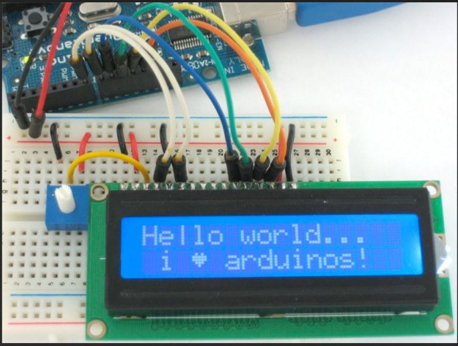

PROJECT / 01
ESP32 home lighting
Motion input, timed lighting and MQTT state reporting for Home Assistant.
Reference implementation · hardware verification pendingRead project & view code ↗I'm Mohsen, an electrical and automation engineering graduate based in Finland. This is my collection of embedded and IoT work, from sensor acquisition to connected monitoring.

Each project links to its source, setup notes and current verification status.
Motion input, timed lighting and MQTT state reporting for Home Assistant.
Reference implementation · hardware verification pendingRead project & view code ↗Temperature, humidity, motion and light acquisition with LCD output and MQTT JSON messages.
Coursework archive + refactored exampleRead project & view code ↗Distance measurement with a VL53L0X sensor, audible feedback and ThingSpeak reporting.
HAMK group prototype + refactored exampleRead project & view code ↗A focused introduction to temperature and humidity acquisition with serial output.
Coursework exampleRead project & view code ↗Portable ADC conversion logic, a UART line parser and an integration checklist.
Practice code · original STM32 lab sources not includedRead project & view code ↗I hold a BEng in Electrical and Automation Engineering from HAMK. My background includes robotic controller and sensor integration with ROS2, Python and C++, alongside building-system data monitoring.
These projects document coursework, personal project ideas and current practice in microcontroller programming, sensor interfaces and connected systems.
Historical coursework and new portfolio extensions are identified in the repository. Refactored examples and documentation were prepared with AI assistance in October 2026; target-hardware verification remains pending where stated. The digital white stick was a group project with Karim Ghosn and Jack Awcock.
Read validation notes ↗Explore the implementation on GitHub or connect with me on LinkedIn.